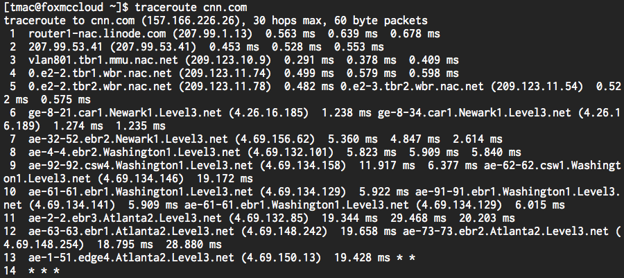
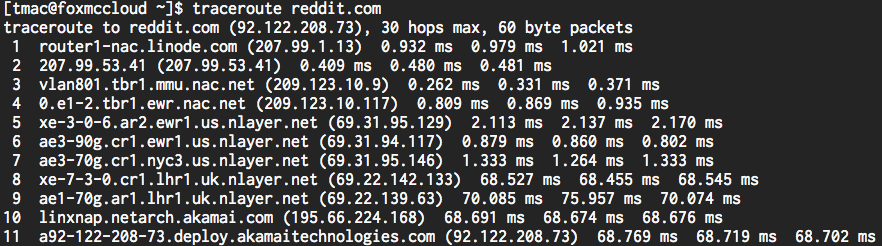
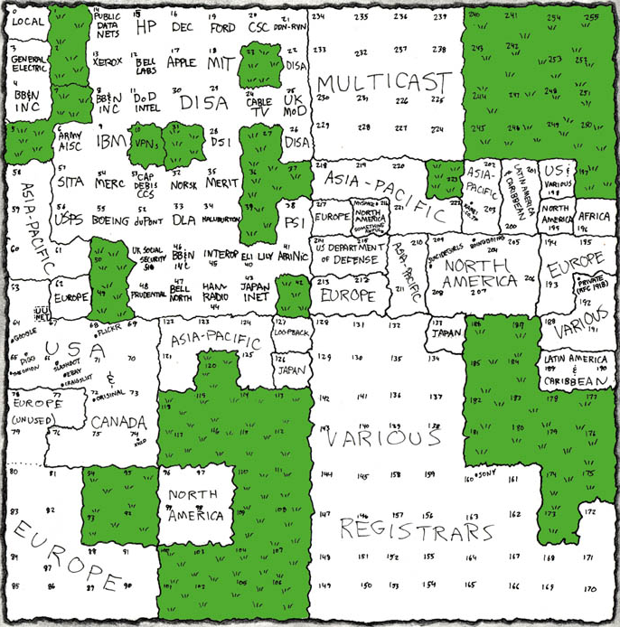
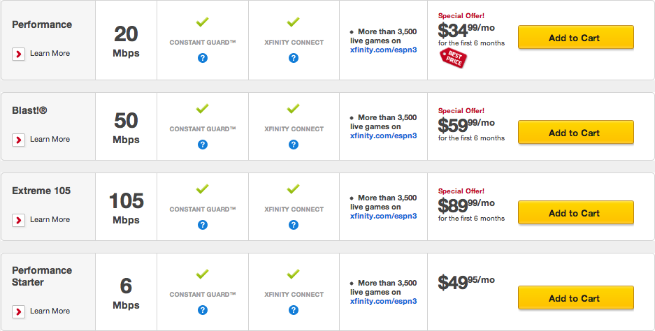
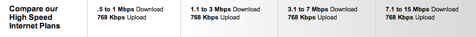
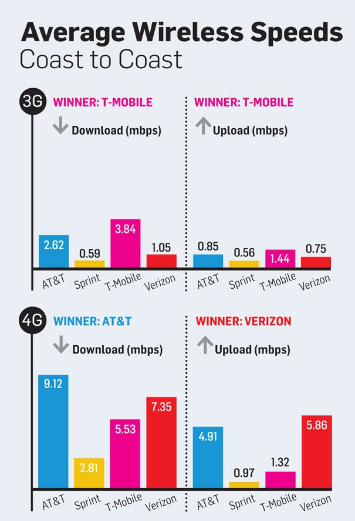

Chapter 6 Project Interweb: Make it Network
Now that we've seen how the hardware innards of your computer work, let's shift gears a bit and discuss everyone's favorite way to procrastinate: the Internet. So... what is the Internet? It's been described as a series of tubes, but the Internet is really a huge network of connected computers. Using the Internet, your machine can contact another machine, like the one powering cnn.com, in order to share information. Computers that power websites have a special name: servers. A server's job is to respond to requests from a client; the web servers behind CNN.com, for example, respond to requests for news from clients who navigate to the site's various articles! However, there's a pretty good chance that your computer doesn't have a wire running to the computer CNN.com runs on. Or, if it does... then I'm really not sure what to say. Instead, your request to CNN.com will likely be routed through several other machines in order to reach its destination.
A Route Through the Internet
Let's take a look at how my request to CNN.com actually reaches its destination. To do that, we can open up a terminal and use a program called traceroute, which makes a request to some destination on the Internet and displays each machine it visits on the way there. Here's what happened when I ran it from a computer living in Newark, New Jersey (where Snooki is my dedicated system administrator). Before you ask, yes, I do indeed name my computers after characters from Star Fox.

Since my computer isn't directly connected to a computer powering CNN.com, my request will need to head through a few intermediate destinations on its way, much like a long flight might have a few layovers instead of a single, direct connection. Each one of rows in the above picture represents a device that my request went through on its "flight" to CNN.com. The first of these rows is my computer, where the request originated from. Every row after that represents a device called a router, whose purpose in life is to route a request for information to the correct destination. While each of these routers may not know how to contact CNN.com, each does seem to have some idea of how to get there. More specifically, each router has its own routing table, which maps ranges of destination addresses to other routers it's connected to. So, when my request for CNN.com reaches a router, that router will use its routing table to determine where my request should be sent to next, so it can reach its destination as quickly as possible. While most of the routers above don't know exactly how to get to CNN.com, they do know of another router that is a bit closer to my request's final destination. Eventually then, my request will be sent to a router that does know how to get to CNN.com, thus completing its flight.
In the first column, we can see how many "hops" it took our request to reach each router. Next, we can see something that looks like an identifier for each device. From this output, it looks like our request started in Newark and then passed through Washington and Atlanta before reaching its final destination. The stars on row 14 simply indicate that that particular machine is choosing not to disclose any information about itself, for one reason or another. In the next column, we see each device's IP address, or a unique and identifying series of numbers, that can be used to contact the router. Finally, we can see how long it took from our request to get from the Jersey Shore to that machine. Based on this output, it took less than 20 milliseconds for my request to travel all the way to Atlanta, Georgia!
Networks
You may also have heard the term "router" while setting up your home Internet. In general, a router is used to create a network, which is simply a collection of connected computers. Several computers can be physically wired to a router, which can then serve as a communication hub by allowing each of the computers to talk to one another. For example, if Computer A and Computer B both have cables running to the same router, then Computer A can send a message by Computer B by sending it to the router, which can then forward the message along to Computer B. It just so happens that many modern routers also allow devices to connect to the network wirelessly, which does exactly the same thing, but doesn't require a physical cable running from each computer to a central router. In your home, your router is likely attached to a DSL or cable modem, which establishes a connection via a coaxial cable and data jack. An Internet Service Provider, or ISP, is then responsible for connecting you to the Internet. Large ISPs in the United States include Comcast and Verizon, whose service (or the service of one of their subsidiary companies) you may use in your own home! So, in order to connect to the Internet, your computer connects to some kind of router, which is connected to an ISP, which is ultimately connected to a huge network of other routers that can be used to ensure your request reaches its destination.
If a network is simply a collection of connected computers, then the Internet is a collection of connected networks! At home, you might have a small network in which your desktop and laptop can both connect to the Internet via a wireless router. At work or at school, on the other hand, you might use a much larger network that connects tens or hundreds of computers together, which may allow each computer to access some kind of shared storage, for example. This type of network is called a LAN, or local-area network, since it connects computers over a small, limited area. A WAN, on the other hand, is a wide-area network, and it connects computers over a larger geographical area. WANs can also be used to connect LANs together, so you might consider the Internet to be a WAN spanning the entire globe. It's precisely because these various networks are interconnected that my request is able to hop along a series of routers in order to reach a destination!
Let's try tracing another request through the depths of the Internet. Here's the output of traceroute on a different destination, reddit.com. If unfamiliar with reddit, click here to waste the next ten hours of your day. By the way, sites like http://traceroute.monitis.com and http://traceroute.monitis.com/ let you run traceroute from within your browser!

This one looks a bit different. Unlike the previous output, it doesn't look like we can immediately figure out where my request went. However, let's take a closer look at that second column again. Turns out that routers are commonly identified using nearby airport abbreviations. A quick Google search shows that "mmu" is New Jersey's Morristown Municipal Airport, "ewr" is the Newark Liberty International Airport, and "nyc" is New York City. Now, take a look at the times between hops 7 and 8; looks like our time jumped from 1 millisecond to 68 milliseconds! What happened there, are all those Yankees fans slowing down the Internet in New York? While that could be the case, it looks like the next router is located in the United Kingdom, the London Heathrow Airport to be precise! Unsurprisingly, it takes a while for my request to make like Columbus and traverse the Atlantic Ocean.
IP Addresses
Let's take a closer look at that third column, the four numbers separated by dots. A device's IP address, much like your street address, describes a location to which other devices connected to the Internet can send messages. Each number in an IP address, called an octet, ranges from 0 to 255. So, how many bits is that? (Hint: why is it called an octet?) We know that with one bit we can represent all numbers ≤ 1, with two bits numbers ≤ 3, with three bits numbers ≤ 7, and so on. Eventually, we'll find out that we can represent all numbers ≤ 255 with exactly 8 bits. So, each octet in an IP address is 8 bits long, which means we have a total of 32 bits to work with. Hopefully that number rings a bell, as 32 bits is equal to one byte!
Because all IP addresses are simply four numbers between 0–255, that must mean that we only have a fixed number of them. To figure out how many, let's think about an IP address as a sequence of 32 bits. We know that each of those bits can be either a 0 or a 1, which gives us only two possibilities. Since there are 32 of them, that means that the total number of unique sequences of 0s and 1s is 232, or 4,294,967,296. At first glance, four billion addresses seems like plenty. (If not, then your intuition is better than mine!) However, the current world population is currently pushing seven billion people. On top of that, I have three different Internet-connected devices into my pocket, which isn't uncommon in today's world. Finally, companies like Google have millions of different servers, each needing some kind of IP address. Suddenly, those four billion addresses don't seem like that many.
As an aside, this isn't the first (or last) time technology has outgrown existing infrastructure. Rumor has it that in 1981 Bill Gates was quoted as saying "640K of memory ought to be enough for anybody" to address concerns with memory limitations of an IBM computer. In the Internet's earliest days, thoughts of supporting over 4 billion interconnected devices probably weren't at the front of engineers' minds!
IPv6
So if we're running out of IP addresses, what can we do? After all, without an IP address, a device cannot be contacted by other devices connected to the Internet. One solution is to simply increase the size of IP addresses, which would increase the total number of available addresses. The 32-bit IP address is known as IPv4, which was released in the early 1980s. Now, a standard known as IPv6 is starting to gain momentum. While an IPv4 address looks something like 60.254.153.16, an IPv6 address is instead a series of hexadecimal digits like 2001:0db8:85a3:0042:1000:8a2e:0370:7334. Hexadecimal, like binary, simply represents numbers using a different base; while binary uses base 2, hexadecimal uses base 16. Since we only have 10 different digits to work with, hexadecimal uses "a" to represent the number 10, "b" to represent 11, and so on until "f" represents 15. Each hexadecimal digit is 4 bits, so IPv6 addresses are 128 bits in length, which creates a total of 2128 (or 3.4 × 1038) different addresses. To be precise, IPv6 allows 340,282,366,920,938,463,463,374,607,431,768,211,456 different IP addresses. For an always up-to-date count of how many IPv6 addresses are left in the world, check out this website. Assuming the world's population is about 7 billion people, that means we can have have 4.8 × 1028 different IPv6 addresses per person. That's a whole lot of iPhones! Of course, the people behind IPv4 probably said something similar 30+ years ago...
The adoption of IPv6 has been slow but steady. June 6, 2012 was dubbed World IPv6 Launch, and major Internet companies were encouraged to finally enable IPv6 support once and for all. The event was even advertised with the tagline "this time, it's for real." About a quarter of the world's top 500 sites have IPv6 enabled, and about 1% of Google users connect using IPv6. However, Google does note that the number of IPv6 users has increased by a factor of 2 since last year, which is promising for IPv6 adoption.
NAT
Making addresses bigger isn't the only way we can conserve the IP address space. In fact, you probably don't need the laptop sitting on your kitchen table to be accessible by any other computer on the Internet (and or security reasons, you might not want this either, but more on that later). Because you don't need other machines on the Internet contacting your computer, there's no need to give it a unique, publicly-accessible IP address. Your computer will indeed need some kind of IP address in order to connect to the Internet, but that's where a technology called NAT, or Network Address Translation comes in. Using NAT, the router connecting your home computer to the Internet can assign it a private IP address, or one that cannot be used by any ole' device on the Internet to reach your computer. Typically, private IP addresses take the form 10.x.y.z, 172.16.y.z, and 192.168.y.z, where x, y, and z are also numbers between 0 and 255, which may look familiar if you've ever set up a home wireless network. Now, only your router has a single public IP address, while all of the devices on your home network have private IP addresses that don't take away from the pool of 232 IPv4 addresses!
But, this begs the question of how a computer with a private IP can interact with the Internet at all. After all, if I request information from cnn.com, then I'm probably expecting to receive some kind of response from my favorite news network, but CNN can't use my laptop's IP because it's private. Here's where the "T" in NAT kicks in. When my computer with a private IP address makes a request to a public IP address, it has to go through my router first, since that's what's connecting my computer to the Internet via my home network. Though my laptop doesn't have a public IP address, my router sure does. Once my request gets to the router, NAT will modify it so the request looks like it's coming from the router's public IP rather than my computer's private IP. After this slight modification, the router will happily forward it along to the next stop on its journey to CNN. In some cases, routers will actually have a pool of different IPs to choose from, but the same process applies to routers with just one IP address.
Eventually, Wolf Blitzer is going to receive my request and will want to send a response to my computer. Remember, my request looks like it's coming from my router's IP, which can be accessed by cnn.com because my router's IP is public. So, cnn.com will go ahead and send its response along to my router's IP. After another series of hops, my router will eventually receive today's news from CNN. Now, the router has to forward that response along to the computer that originally made the request, keeping in mind that I could have multiple devices on the same network. The router must therefore maintain an internal table of the IP addresses of all the devices that are using the router to connect to the Internet. Associated with each IP in this table is a source port, which is simply a unique number assigned to each device connected to the router. When the router modifies an outgoing request to change the source IP, it also tacks on that device's source port, which then gets sent to CNN. The response from cnn.com will thus also contain the source port attached by NAT, which the router can then use to figure out what device to forward the response to.
Let's make this process a bit more concrete with an example. I'm running a wireless network at home, and my router has an IP of 74.125.226.228. Currently, there are three devices connected to the network, and each has its own private IP. I'm relaxing after a long day, so I make a request from my laptop to 64.208.126.154, which will lead me to reddit.com. My network is using NAT, so here's the state of the world from my router's perspective.
| Device | Private IP | Public IP | Source Port |
|---|---|---|---|
| Macbook Air | 10.0.0.1 | 74.125.26.228 | 1000 |
| iPhone | 10.0.0.2 | 74.125.26.228 | 1001 |
| iPad | 10.0.0.3 | 74.125.26.228 | 1002 |
Okay, looks like my laptop has a private IP of 10.0.0.1. Remember, anything in the form 10.x.y.z is a private IP address that isn't world-accessible, so a computer that's not on my network can't simply send information to my laptop. Once my request reaches the router, its source address will change to that of the router, 74.125.26.228 in this case, and the source port, 1000, will be added to the request. Reddit will eventually receive my request and send back a picture of a cat to the IP address included in the request, which is still 74.125.26.228 with a source port of 1000. Because Reddit sent my impending feline friend to my router's IP address, it will eventually end up at the router in my home. Then, my router can look at the source port attached to the response to look up the private IP the request originated from. Finally, because my laptop is on the same network as my router, the Reddit data will reach my laptop, and I can enjoy a hearty chuckle. This process certainly sounds pretty involved, but recall how few milliseconds it took to reach Reddit in the United Kingdom!
Determining IP Addresses
We've seen some examples of IP addresses so far, but how did we come up with those numbers? I could just tell you that I'm a really good guesser so you'd be really impressed with me, but I'll be a magician who reveals his tricks just this once. In order to find out the IP address of a website, we can use a special program called host. If we open up a command prompt on a Mac or Linux machine, we can run the following:
host cnn.com
This should tell us what the IP addresses that point to cnn.com are. You'll notice that all of these addresses are IPv4 addresses, since each is 4 numbers separated by dots. Sure enough, if you type 157.166.226.26 into your web browser's address bar and press Enter, you'll see today's news before long! If we instead type:
host google.com
We'll see some different output. One of the last IP addresses output by the host program is an IPv6 address. So, it looks like Google is ready for IPv6, while CNN doesn't appear to be embracing the latest and greatest quite yet!
Movie Break
Phew, it's time for a break. Check out this cinematic masterpiece for a summary of how requests travel through the information superhighway!
DHCP
So far, we've taken for granted that a computer connected to the Internet will have an IP address. Let's now take a look at how that number actually gets assigned. As you move among different networks and even as you connect to the same network, your computer's IP address will change. This is a bit different than the computers that power websites like cnn.com, which typically have some mechanism for maintaining the same IP address or set of IP addresses. More on that later, though!
DHCP, or dynamic host configuration protocol, is commonly used to obtain an IP address on a network. First, a computer that wishes to connect to the network, referred to here as the DHCP client, broadcasts a request to the network with a message that says "Here I am. I'd like to join." Then, a device called the DHCP server (which will eventually be responsible for assigning an IP address to the client) will respond to the client's request, informing the client what its IP is. Now, the client knows exactly where it should send future messages during the process of obtaining an IP address, so it won't needlessly send messages to machines that aren't involved in the process. Next, the client will send another message to the DHCP server, this time formally requesting an IP address on the network. Upon receiving this request, the DHCP server will respond and offer the client an IP address on the network. In the meantime, the server will hold that IP address inside, so no other devices can have it until the client responds. Finally, the client will send one last message to the DHCP server, acknowledging that it has received the IP address and has begun using at. At this point, the client is connected and ready to go!
IP Address Allocation
This process assumes, though, that the DHCP server somehow knows which IP addresses it can assign. For example, a DHCP server in North America needs to ensure that it doesn't assign an IP address that is already in use by a device in Europe. To mitigate this issue, different ranges of IP addresses are allocated to different physical regions of the globe. More specifically, different ISPs around the world have been allocated blocks of IP addresses by an organization called ICANN, the Internet Corporation for Assigned Names and Numbers. Here's a map created by the author of XKCD, one of my favorite webcomics.

Let's take a closer look. Towards the top of the map, we can see that some organizations have been allocated huge IP ranges. Apple, for example, has all IP addresses in the form 17.x.y.z, and MIT has all IP addresses in the form 18.x.y.z. The number of IP addresses in those ranges in comparable to the number of IP addresses allocated to entire countries, like Japan's 126.x.y.z. From our earlier traceroute output, we can see that my trusty machine in New Jersey has an IP in one of the many ranges allocated to North America. Finally, if you take a look at the right of the map at the 192.x.y.z range, you'll see a small dot that says "private." Sure enough, that's referring to the 192.168.y.z range that we saw earlier was reserved for private IP addresses!
It looks like this IP address map spans the entire globe. We saw from our traceroute output earlier, though, that we can contact an IP address all the way on the other side of the world in almost no time at all. The speed with which you can access the Internet will depend on your Internet Service Provider (ISP), since ISPs like Comcast and Verizon are responsible for your connection. Internet speeds are typically measured in Mbps, or megabits per second. I know, I know, that's really confusing. We measured RAM and hard drive capacity in megabytes (with a capital B), but here we are using megabits (with a lowercase b). I'm deeply sorry about that. I don't make the rules; I just enforce them.
The speed of your Internet connection is typically broken down into two parts: download speed and upload speed. Download speed measures how fast data is transferred from a remote computer to your computer, so it measures how fast web pages and cat videos will load. Upload speed, on the other hand, measures how fast data is transferred from your computer to a remote computer, so it measures how fast you can send a new cat video to YouTube. Why the difference? Well, as a typical Internet user, you've probably noticed that you download much more than you upload. Surfing the web requires downloading web pages, images, and videos pretty frequently, while it's probably much less common that you upload a document to a website or attach something to an email. If you're using a browser-based email client than Gmail, then you had to download things like the Gmail logo and web page before you could even attach that file, so there's a pretty good chance that downloading information is more common.
Let's take a look at some plans offered by two ISPs: Comcast (shown first) and Verizon (shown second).


Here, it looks like Comcast speeds in this area are a bit faster, but Verizon is a bit cheaper. Now that we know all about memory, we can put some context to these numbers! Let's say we want to download a 1 GB movie. 1 GB is 1000 MB, which is 8000 Mb. So, on a 3 Mbps Internet connection, downloading that movie will take 8000 / 3 = 2667 seconds, or about 45 minutes. Using the same logic, this movie will take about 22 minutes to download on a 6 Mbps connection, and only about 7 minutes to download on a 20 Mbps connection. Websites like Speed Test and What is My IP allow you to actually measure the upload and download speeds of your Internet connection, so you can see what kind of speeds you're actually getting for your monthly payment. However, these sites can sometimes be a bit misleading. For example, your ISP might sometimes burst your connection, or temporarily provide much faster speeds; if an ISP like Comcast bursts the first 10 MB of a download, then small downloads (which may be more common) will complete much faster, which could result in your connection "feeling" faster.
There's a good chance that you connect to the Internet using a wireless network at home or at work, which can also affect the speed of your Internet connection. In addition to the speed limit imposed by your ISP, Wi-Fi networks also have their own speed limits. When buying a wireless router, you may have noticed something along the lines of 802.11g or 802.11n on the box. That seemingly random sequence of characters actually tells you which Wi-Fi standard the router uses. 802.11n is the newest recommended standard, which allows for data to be transferred at a maximum of 300 Mbps, while 802.11g and 802.11a are a bit older and offer speeds of 54 Mbps. However, these speeds are really just hypothetical maximums, and Wi-Fi networks usually have speeds that are about half of these maximums. So, when purchasing an Internet plan from your local ISP, you probably don't want to pay for an extreme 105 Mbps connection and then hook it up to a router that only uses 20 of those Mbps! On the same note, there's no need to buy a router that uses 802.11n if your laptop only has an 802.11g wireless card, or else it won't be able to take full advantage of your network's speed. In almost all modern laptops, wireless cards are already built in, but you can still purchase USB or PCI wireless cards.
On your phone or tablet, you might instead use a 3G or 4G connection, which are simply other standards that devices can use to connect to the Internet wireless. While the 802.11n network in your home is set up via a router with an Ethernet cable, your phone's 3G or 4G connection utilizes a data network set up by a cell phone provider. 3G is a bit of an older standard, while 4G is a new standard being deployed by an increasing number of service providers. As you may have noticed, 3G and 4G speeds are probably a bit slower than your home connection, but the newer 4G standard offers much better speeds compared to 3G. The below is a comparison of 3G and 4G speeds for a few popular service providers, this time using speeds actually measured in the real world.

Finally, let's round out our networking discussion with two terms you may have encountered on your corporate network. First, a firewall is a piece of software used to protect a network from malicious connections coming in from the outside world. When a request comes into a network, the firewall will examine it before it reaches any device on the network, and the firewall can block the request from the network based on a set of pre-configured rules. For example, a rule could say "block requests from the IP 17.0.0.1" or "block requests from facebook.com." More advanced firewalls may support rules like "block any request containing the word 'pirate,'" which could be used to prevent employees from illegally downloading software at work.
In order to allow employees to work from home, corporations may set up a VPN, or virtual private network. Using VPN, you can access resources on a LAN that you're not connected to. By establishing a connection to a VPN server on the desired LAN, VPN allows you to securely communicate with the LAN on a public, potentially insecure network. So, VPN allows organizations to keep their secret information on a private network while still allowing others to access the information when they're not physically connected to the LAN.
Alrighty, now that we have some networking basics down, let's move a step up from IP addresses!
Practice Problems
Recall that sites like http://en.dnstools.ch/visual-traceroute.html and http://traceroute.monitis.com/ let you run traceroute from within your browser! Where are each of the following sites hosted?
a. cse1.net
b. mcdonalds.com
c. mlb.com
What's an IP address? What's the difference between IPv4 and IPv6? Why is IPv6 necessary?
Based on the maps above, it looks like many requests take a very roundabout path to their destination. Why might this be the case? Do all routers know how to get to every IP address on the Internet?
What's the difference between a public IP and a private IP? What form do private IPs typically take?
My computer is on a network using NAT. What can you say about my computer's IP address? How does a server's response make its way back to my computer?
In a succinct but technically detailed paragraph, how does your computer acquire an IP address on a network using DHCP?
Let's test the Internet connection you have at home or at work. First, what are the download and upload speeds of your connection, according to your ISP? Now, using http://www.speedtest.net or http://www.whatismyip.com/speed-test, what are the actual download and upload speeds of your Internet connection? Is there a difference between what your ISP reports and what the tests report?